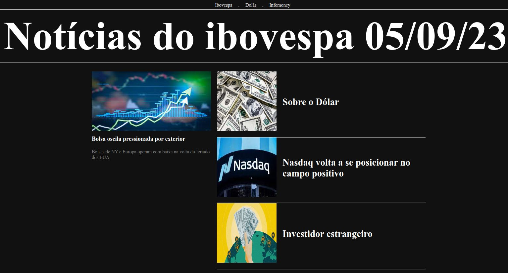

Este projeto tem como objetivo o consumo da API do Star Wars, aplicação de filtros
utilizando React e, com as informações da API, filtrar os planetas que aparecem no universo de Star
Wars, classificando-os por número de habitantes, tamanho e galáxia.

Este projeto tem como objetivo produzir prévias de músicas dos álbuns de
artistas, fazendo requisições e consumindo dados da API, e percorrendo as URLs com React através do
Router.

Este projeto tem como função simular uma paleta de cores, onde o usuário pode
selecionar uma cor e em seguida pintar um quadrado. Foi desenvolvido utilizando HTML, manipulação do DOM
e CSS.

Este projeto faz a requisição e consumo da API do Mercado Livre. Nele, é possível
selecionar produtos para adicionar ao carrinho de compras. A medida que os produtos são adicionados, o
total a ser pago é somado automaticamente. Existe também a opção de remover todos os produtos do
carrinho, zerando o estoque e o valor total a ser pago.

A Carteira de despesas é uma aplicação onde pode listar o qeu fez e controlar seus
gastos com seus afazeres em vários pares de moedas, com a soma final convertido em BRL. Linguagens
usadas: React e Redux.

Tryunfo é uma aplicação que pega URL das imagens para criar os persongens, ao colar
a URL, você cria um card com os poderes e descrição que achar melhor para o personagem, existem 4
classses, normal, raro, muito raro e Super Trunfo, onde só pode ter um Super Trunfo. O projeto feito em
React, Javascript e CSS.

Um projeto responsável por desenvolver funções que buscam informações sobre os
animais do zoológico como: espécie e local de origem. Além de buscar dados sobre as pessoas que
colaboram com a manutenção e cuidado do zoológico. Habilidades com ES6, Higher Order Functions e testes.
Projeto onde o objetivo é desenvolver um sistema para a oficina que permita o
cadastro e a identificação do cliente, o gerenciamento do serviço a ser executado no veículo e a seleção
de peças.
Funcionalidades: Identificação do cliente através do QRCode; Cadastro do nome da pessoa que será
responsável pelo serviço a ser executado no veículo; Seleção de peças, com leitura automática do valor
da peça; Controle da data/hora do início e término do serviço.
Tecnologias Utilizadas HTML; CSS; JavaScript; React;
Este projeto é um blog dedicado às as noticias do dia 05/09/2023 do Ibovespa,
o principal índice de ações da Bolsa de Valores de São Paulo (B3).
Com foco no básico do Angular, este projeto apresenta: Componentes Interativos, Página Dinâmica, CSS,
HTML e Dados Mockados para simular informações dinâmicas.
Tecnologias Utilizadas HTML; CSS; Typescript; Angular.

Este projeto tem como objetivo recriar a PlayStation Store usando o Angular e aplicar
técnicas de refatoração para aprimorar a estrutura do código. Utilizando componentes e subcomponentes via átomo
como blocos de construção fundamentais, implementando componentes dinâmicos para uma experiência de usuário mais
flexível e aplicamos estilos para uma apresentação visual atraente.
Tecnologias Utilizadas HTML; CSS; Typescript; Angular.
Produtos é uma aplicação de cadastro de produtos e usuários, além de pesquisas do
mesmo, trabalhando para criar um token para identificar o usuário e criptografar a senha de acesso e
escondê-la ao acessá-la.
Ferramentas utilizadas na aplicação: Declarar variáveis e funções com tipagens Typescript; Construir uma
API Node Express utilizando o Typescript. TypeScript e chave JWT e operações básicas no banco de dados
usando CRUD(Create, Read, Update e Delete).
O Blogs-API é uma aplicação que envolve API que significa Application Programming
Interface (Interface de Programação de Aplicação), que contém um banco de dados para a produção de
conteúdo para um blog.
Nessa aplicação é desenvolvida em Node.js usando o pacote sequelize para fazer um CRUD de posts.

Este projeto é uma aplicação que usa princípios de Programação Orientada a Objetos
(POO) para a construção de uma API com CRUD para gerenciar uma concessionária de veículos(carro e moto.
Isso será feito utilizando o banco de dados MongoDB através do framework do Mongoose.
Trabalhando em uma API utilizando o método TDD e também integrar - através do
docker-compose - as aplicações para que elas funcionem consumindo um banco de dados.
A API trás informações sobre partidas e classificações de futebol, usando TypeScript, utilizando
princípios da arquitetura SOLID, Sequelize, MySQL e princípios de POO.
Criar uma API para loja de itens medievais, utilizando Typescript.
Desenvolver todas as camadas da aplicação (Models, Service e Controllers) onde poderei fazer
determinadas aplicações no banco de dados: Criação, Leitura, Atualização e Exclusão(CRUD, Create, Read,
Update e Delete) e chave JWT.
Projeto Restaurant Orders
A prática do uso do conceito de Hashmaps através das estruturas de dados Dict e Setdo Python; A prática
do uso da ferramenta Pandas junto a sua estrutura de dados DataFrame; A prática dos conhecimentos de testes
de software; A prática dos conhecimentos de orientação a objetos.
Projeto TING - Is Not Google.
Estruturas de dados como: Pilhas, Filas, Deques, Listas ligadas e Listas duplamente ligadas; Manipulação
de arquivos TXT; Implementação de um programa que simule o algoritmo de indexação de documentos similar ao
do google. Ou seja, um programa que permita anexar arquivos de texto e posteriormente opere funções de busca
sobre tais arquivos.
Projeto - Algoritmos.
Análise de complexidade de algoritmos, recursividade e algoritmos de ordenação e busca.
O que vai desenvolver:
Lógica;
Capacidade de interpretação do problema;
Capacidade de interpretação de um código legado;
Capacidade de resolução do problema, de forma otimizada;
Resolver o problemas/Otimizar algoritmos mesmo sob pressão.
Desafio Ransomware Cibersecurity.
Este desafio tem como objetivo criar um script em Python para criptografar e descriptografar arquivos.
Este é um exercício educacional que explora conceitos básicos de criptografia e manipulação de arquivos.
ATENÇÃO
Este desafio é fornecido apenas para fins educacionais e não deve ser usado de maneira prejudicial.
A criptografia de arquivos para fins maliciosos, como ransomware, é ilegal e antiética. Certifique-se de
respeitar as leis e éticas ao utilizar tais conhecimentos.
Collections-java-api.
O Collections-java-api tem como objetivo de trabalhar com operações básicas, pesquisa e
ordenção com diversos exemplos usando List, Set e Map.
Dominio-Bancario Java.
Praticando Abstração no Domínio Bancário, Herança Bancária: Entendendo a Herança
e Polimorfismo; Cofres Seguros: Dominando o Encapsulamento e Abstração; Reunião de Acionistas:
Consultando Análises Bancárias; A Última Transação: Transformando Registros Bancários
iPhone-POO-UML Java.
Modelagem e diagramação das classes e interfaces com a proposta de representar os
papéis do iPhone de: Reprodutor Musicial, Aparelho Telefônico e Navegador na Internet.
Representação em UML e Código no que se refere ao componente iPhone.
DesafioControleFluxo Java.
Explorando alguns cenários com fluxos condicionais,
repetições e excepcionais.Pré-requisitos:
Lógica de programação e POO;
Conhecimentos básicos(Java);
Sistema-Estacionamento C#.
construir um sistema para um estacionamento, que será usado para gerenciar os veículos estacionados
e realizar suas operações, como por exemplo adicionar um veículo, remover um veículo
(e exibir o valor cobrado durante o período) e listar os veículos.
AdicionarVeiculo: Método responsável por receber uma placa digitada pelo usuário e guardar na variável veiculos.
RemoverVeiculo: Método responsável por verificar se um determinado veículo está estacionado, e caso positivo, irá pedir a quantidade de
horas que ele permaneceu no estacionamento. Após isso, realiza o seguinte cálculo: precoInicial * precoPorHora, exibindo para o usuário.
ListarVeiculos: Lista todos os veículos presentes atualmente no estacionamento. Caso não haja nenhum, exibir a mensagem "Não há veículos estacionados".
trilha-net-poo-desafio C#.
Modelar um sistema que trabalha com celulares. Para isso, fazer uma abstração de um celular e disponibilize
maneiras de diferentes marcas e modelos terem seu próprio comportamento, possibilitando um maior reuso de código e
usando a orientação a objetos.
Convencoes-Desafios C#.
Desafio com exemplos práticos para treinar e aperfeiçoar a lógica e pensamento computacional.
Desafio-Orientacao-Objetos C#.
São desafios com exemplos práticos com o propósito de treinar POO, Herança Subclasse, Objeto Com Atributos
e Propriedades com Metodos. São duas pastas, uma fazendo com chamada no mesmo arquivo e outra com instânciando
as classes em um único arquivo.